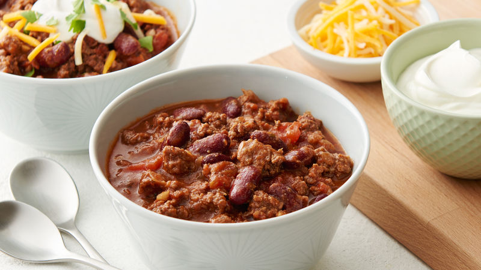

Big Kahuna Chili

This chili is very delecious. It is the perfect plend of savory, sweet, and spicy. You can use it as a dip or spread it on your favorite foods.
Ingrediants
- 2 teaspoons oil
- 2 onions, chopped
- 3 cloves garlic, minced
- 1 lb lean ground beef
- 3⁄4 lb beef sirloin, cubed
- 1 (14 1/2 ounce) can diced tomatoes
- 1 can dark beer
- 1 cup strong coffee
- 2 (6 ounce) cans tomato paste
- 1 can beef broth
- 1⁄2 cup brown sugar
- 3 1⁄2 tablespoons chili sauce
- 1 tablespoon cumin
- 1 tablespoon cocoa
- 1 teaspoon oregano
- 1 teaspoon cayenne
- 1 teaspoon coriander
- 1 teaspoon salt
- 4 (15 ounce) cans kidney beans
- 4 chili peppers, chopped
Directions
- Heat oil.
- Cook onions, garlic and meat until brown.
- Add tomatoes, beer, coffee, tomato paste and beef broth.
- Add spices Stir in 2 cans of kidney beans and peppers.
- Reduce heat and simmer for 1 1/2 hours.
- Add 2 remaining cans of kidney beans and simmer for another 30 minutes.